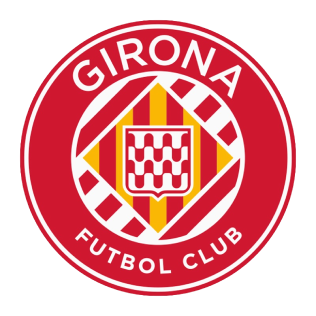
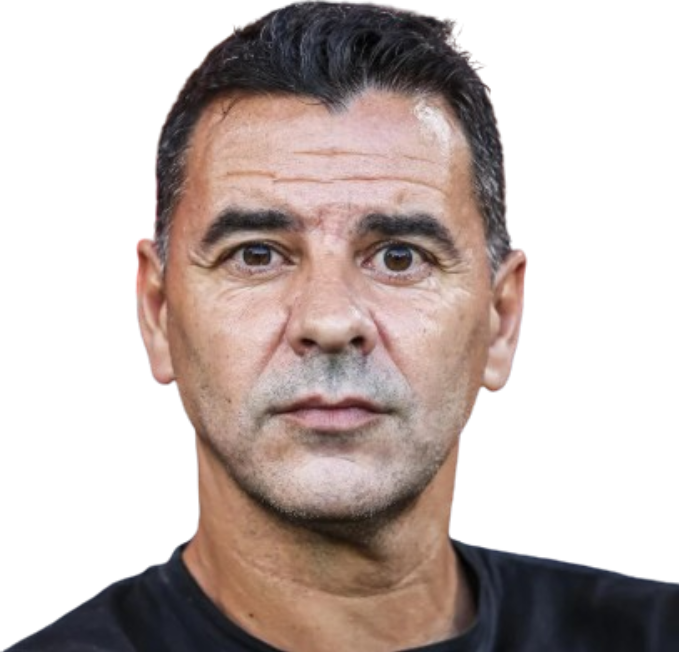
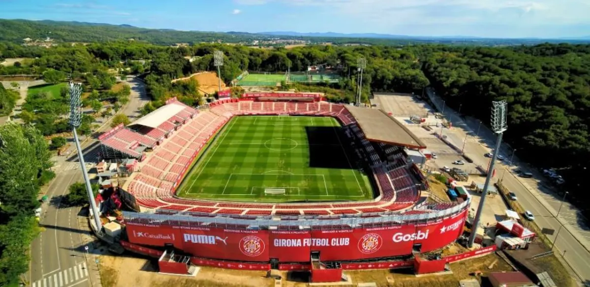

Treinador: Míchel
Míchel é um treinador espanhol nascido em Madrid, reconhecido pela sua visão audaz e pela capacidade de extrair um futebol de alta fidelidade dos seus planteis. Após uma carreira distinta como jogador, consolidou-se como um dos técnicos mais entusiasmantes da Europa.

Estádio: Estadi Montilivi
O Girona FC joga no Estadi Montilivi, um recinto acolhedor e carismático com cerca de 14.500 lugares, famoso pela sua atmosfera vibrante e pela proximidade única entre os adeptos e o relvado.

Estilo de Jogo:
O estilo de jogo de Míchel no Girona em 2026 é aclamado como um dos mais atrativos e inovadores do futebol mundial, caracterizado por uma coragem ofensiva que desafia as hierarquias tradicionais.
"Orgull Gironí!"